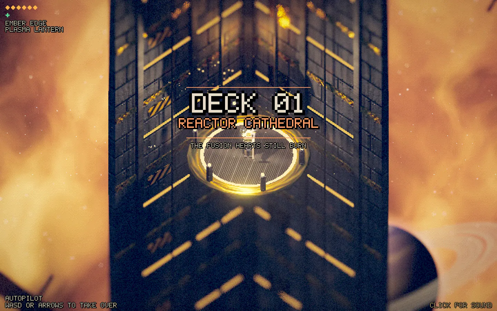
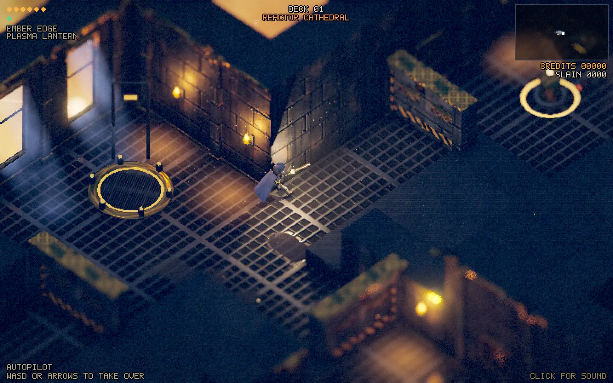

打开页面，升降台会带着一名星骑士沉进竖井。灯笼从他的左手垂下来，身后是一条会摆动的披风。游戏可以自己玩下去：自动驾驶会替你走完这一层、挥剑、捡补给，再乘电梯沉到下一层；你也可以随时用键盘、手柄或触屏接手。这是 Kevin T. Ngo 的浏览器游戏《VOIDLIGHT DEPTHS》：一趟等距视角的太空歌剧式下潜。几何、贴图、关卡、音效和配乐都由代码生成，最后打包装进一份可以单独打开的网页。
版权说明：仓库与演示页未附带开放许可证。本页为独立中文导读，只引用短句，不转载源码。插图截自官方演示页。

这是什么
仓库提交说明把这件作品称作「a self-playing isometric space-opera descent」：一趟会自己玩的、等距视角的太空歌剧式下潜，装在一份自包含的 index.html 里。作者是 Kevin T. Ngo（提交邮箱 kevin@kengoworks.com）。同一条提交还写明与 Claude Fable 5.2 合写。提交时间为 2026-11-26 23:48（新加坡时间）。
你扮演一名星骑士，提着一盏会摆动的等离子灯笼，在一艘已经死去的星舰里一层一层往下走。每一层都是一间被遗弃的甲板：反应堆还在燃烧，花园活过了园丁，冷冻库里睡着一万名不再做梦的人。打完这一层的巨物，拿到指挥钥匙，升降台才会把你送往更深处。
演示需要支持 WebGL2 的现代浏览器。若浏览器不够新，页面会提示《VOIDLIGHT DEPTHS》无法运行。
怎么玩
默认是自动驾驶。屏幕左下角写着「AUTOPILOT」，并提示用 WASD 或方向键接手。自动驾驶会自己探路、挥剑、捡起升级和医疗舱，并避开还没开启的危险。键位是：WASD 或方向键移动，空格劈砍，Shift 冲刺，E（或 Q）使用医疗舱，M 开关声音。也支持手柄，手机上则有虚拟摇杆和攻击、冲刺、治疗按钮。右下角写着「CLICK FOR SOUND」，声音要在点击之后才会响起。
武器和灯笼都能升级。刃从「EMBER EDGE」开始，经过「TEMPERED STARSTEEL」「COLDFIRE EDGE」「VOIDGLASS BLADE」，直到「THE DAWNBRAND」。灯笼从「PLASMA LANTERN」开始，经过「STOKED LANTERN」「TWIN-CORE LANTERN」「HALOED LANTERN」，直到「THE STAR IN A CAGE」。层上还有学分、可打碎的货箱，以及打开通往下一层升降台的指挥钥匙。电弧、弹幕一类的远程攻击可以弹开。

十八种甲板
源码为整艘船准备了十八种甲板主题。每一种都有自己的建筑、调色、照明、机关、敌人和一只巨物，也有一套与之相配的配乐。主题会放进一只袋子里打乱后依次抽出，用尽后再洗一轮，同一主题不会紧挨着重复。下潜会继续编号。源码注释里没有写明固定的层数上限。
下面是这十八种甲板的官方英文名称，以及各自的副题、守卫它们的巨物。中文是本页的对照翻译，不是游戏内文本。
| 甲板 | 副题 | 巨物 |
|---|---|---|
| REACTOR CATHEDRAL 反应堆大堂 | THE FUSION HEARTS STILL BURN 聚变的心脏仍在燃烧 | THE UNSHIELDED CORE 未屏蔽的堆芯 |
| THE HANGING GARDENS 空中花园 | THE GARDENS OUTLIVED THE GARDENERS 园丁已逝，园子还在 | MOTHER THORNROOT 棘根之母 |
| THE CRYO VAULTS 冷冻墓库 | TEN THOUSAND SLEEPERS, NONE DREAMING 一万名沉睡者，无人做梦 | THE FIRST SLEEPER 最初的沉睡者 |
| THE GILDED CONCOURSE 镀金大厅 | THE LAST OPERA NEVER ENDED 最后一场歌剧没有散场 | THE HOLLOW REGENT 空洞的摄政 |
| HANGAR BAY SEVEN 七号机库 | DERELICT WINGS BEHIND A DYING FIELD 力场将熄，残翼还在后面 | WRECK-WARDEN TALON 残骸看守者塔隆 |
| THE HIVE DECK 巢舰甲板 | SOMETHING MADE A NEST OF THE DEAD 有什么东西把死者筑成了巢 | THE BROOD EMPRESS 育巢女皇 |
| THE CRYSTAL ARCHIVE 水晶档案库 | EVERY ORDER EVER GIVEN, STILL GLOWING 每一道下达过的命令，仍在发光 | ARCHIVIST PRIME 首席档案官 |
| THE FOUNDRY 铸造厂 | THE GREAT PRESSES NEVER STOPPED 那些巨压机从未停下 | FORGEMASTER SLAG 炉主炉渣 |
| THE FLOODED BALLAST 淹没的压舱 | ANKLE-DEEP AND STILL RISING 水深到脚踝，还在上涨 | THE DROWNED LEVIATHAN 溺亡的巨兽 |
| THE STAR CHAPEL 星辰礼拜堂 | AN ORRERY TURNS FOR NO ONE 一架浑天仪在为谁也不为的人转动 | THE ORRERY SERAPH 浑天仪炽天使 |
| THE BRIG 禁闭舱 | THE CELLS HELD. THE WARDENS DID NOT. 牢房还在。看守已经不在。 | HIGH WARDEN VEX 高阶看守维克斯 |
| THE BREACHED HULL 破开的船体 | TORN OPEN TO THE NEBULA 被撕开，对着星云 | THE VOID MAW 虚空之喉 |
| THE ADMIRALS' CRYPT 提督墓穴 | THEY WERE BURIED WITH THEIR FLEETS 他们与自己的舰队葬在一起 | THE ENTOMBED ADMIRAL 入葬的提督 |
| THE HALL OF MIRRORS 镜厅 | EVERY REFLECTION IS ONE STEP BEHIND 每一面映像都晚你一步 | THE REFLECTED ONE 被映出来的那个 |
| THE LIBRARY OF ASH 灰烬图书馆 | A MILLION VOLUMES, STILL BURNING 一百万卷书，仍在燃烧 | THE LAST LIBRARIAN 最后的图书管理员 |
| THE TURBINE NACELLE 涡轮舱 | THE GREAT ENGINES STILL DREAM OF FLIGHT 那些巨大的引擎仍在梦见飞行 | DYNAMO COLOSSUS 发电机巨像 |
| THE MENAGERIE 珍兽馆 | THE SPECIMENS OUTLASTED THE CURATORS 标本活过了馆长 | THE APEX SPECIMEN 顶点标本 |
| THE CLOCKWORK DEEP 发条深舱 | IT HAS NOT MISSED A SECOND IN A THOUSAND YEARS 一千年里，它从未错过一秒 | THE MAINSPRING 主发条 |
普通敌人在源码里列出了三十种名称，例如残骸躯壳、冷却剂软泥、哨兵无人机、灰烬幽灵、镜中残影、发条哨兵。甲板上还有激光栅、冲压活塞、喷口爆燃、电弧塔和扫射切割梁一类的机关。
它是怎么做成的
源码开头的说明是：几何、纹理、着色器、音效、配乐和关卡，全部在代码里生成。渲染不是 three.js，而是作者手写的 WebGL2 引擎：带立方体阴影的灯笼、聚光灯阴影、实例化绘制，以及一层正向的 PBR 着色。星骑士的披风用Verlet积分来模拟布料，灯笼则像一只受骑士自身加速度带动的阻尼钟摆。刃是一圈白热的薄芯，外面再套一层光鞘。
每一层甲板由一套布局生成器从种子里长出来：房间、走廊、门和死胡同，并检查除了出口升降台之外，其余地方都走得通。指挥钥匙会被放在远离起点、又不会被锁在出口后面的位置。生成工作被切进乘电梯的那段时间里，源码注释写这样做是为了让乘坐过程不卡顿。
声音全部用 Web Audio 合成，没有音频文件。混响的脉冲响应也在代码里生成，并按房间大小切换。每一种甲板主题都有一套会随战况起伏的管弦配乐：探索时是疏落的圆号，开战时则是更完整的铜管、弦乐、合唱和定音鼓。
仓库里同时放着可读的源码和打包工具。build.sh 会把 src/ 下的脚本按顺序拼起来，经过压缩，再打进一份会自行解压的 index.html。仓库里这份演示文件是 164,805 字节。可读源码按引擎、纹理、几何、特效、甲板生成、主题、英雄、敌人、巨物、音效、流程和触屏分成多个文件，没有 README。
和 Brushwild 的关系
同一作者在两天前刚公开过 Brushwild：一款把开放世界画成圆珠笔和彩铅的动作 RPG，同样不附带贴图或模型，同样使用自研的 WebGL2，仓库以 MIT 许可发布。VOIDLIGHT DEPTHS 走的是另一条路：金属、灯笼和太空歌剧，而不是纸面排线；产物是一份打包好的单页，而不是 TypeScript 加 Vite 的工程。两者不要混成一个项目。更早的 What the water keeps 则能在页面里见到 three.js 和模型资产，也与这一件不同。
许可
仓库根目录没有 LICENSE 或 README，仓库页上也没有标出开放许可证。因而本页只做独立导读，不转载源码，也不把演示当作可以自由再分发的软件。若要游玩或查看源码，请前往作者的演示页和仓库。
相关阅读
- 「Brushwild」：用圆珠笔和彩铅画出的开放世界 RPG — 同一作者，同样是代码生成的可玩世界，画风和许可都不同。
- 「What the water keeps」：乘船穿过八个梦境 — 同一作者稍早的浏览器行船演示，页面可见 three.js 与模型资产。
- 「Little City」：浏览器里的手绘微缩小镇 — 另一件把可走入的三维世界画在纸面上的浏览器游戏，仓库为 MIT。
- 「Cloud Pass」：用鱼眼和视差做出的无尽摩托骑行 — 另一件浏览器里的三维骑行，技能仓库为 MIT。